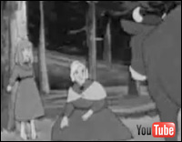
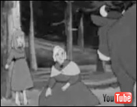

:: Sitio web de Roberto Gutiérrez: Diseñador gráfico de Kale Dor Kayiko.
Declaración de Superman a Jesús Quintero:
La entrevista duraba 35 minutos. Ésta imagen corresponde al minuto 5 de la entrevista. Parece ser que el director de RTVE había visto la entrevista a José María García y no le había terminado de convencer. La siguiente entrevista era ésta de Supermán. Al ver que no habían terminado de transcurrir 5 minutos y la entrevista ya adquiría este perfil, decidió que definitivamente el programa de Jesús Quintero se suprimía de la parrilla de programación…


 Grandes injustcias del siglo XX
Grandes injustcias del siglo XX
Para los más incrédulos aquí tenéis el documento gráfico.
Ocurrió, pero al día siguiente no pareció que ocurrió. Yo siempre he sido más partidario de Britney, la verdad. Pero sé reconocer una injusticia. Y esta fue de las más grandes del siglo XX. Yo lo siento, Christina. Lo siento mucho.
 Más información.
Más información.

 Sus satánicas majestades: Los Rolling Stones
Sus satánicas majestades: Los Rolling Stones
Que digo yo que esta "actualización" del logo clásico de los Rolling Stones no necesita, seguramente, ni más explicaciones, ni muchos más comentarios. Si acaso quieres añadir el tuyo, ahí te dejo el link para que lo añadas.
Y que hablando de sus satánicas majestades, ahí va un pequeño comentario sobre la Semana "Santa".
Que un abrazo a Sevilla; que lo uno no quita lo otro, creo yo.
Rolling Stones
Semana Santa


Yo, la verdad, siempre he creído que éste era un chiste claramente feminista. Y, normalmente se lee así. No obstante siempre hay alguien que me sorprende (a lo mejor tienen razón), diciéndome que no lo es. Si quieres deja tu opinión.
 Escribe aquí tu opinión....
Escribe aquí tu opinión....
Eso sí, personalmente es uno de mis chistes favoritos.
;)
Lewis Hamilton
2007: EL PAÍS: La grúa de la discordia - 20 MINUTOS: La FIA dice que la maniobra de la grúa es legal porque Hamilton no apagó el mortor - MARCA: La FIA debería sancionar a Hamilton por no salir del coche - 2008: ORANGE - DEPORTES: Las trampas de Hamilton en la F1 - SUITE101: Lewis Hamilton o las ventajas de saltarse las normas - ANTONIO LOBATO: "-Ah, pero... ¿esto se puede hacer?... -  Escribe aquí tu opinión...
Escribe aquí tu opinión...

::/ Athletic:

Que alguien pueda pensar que un jugador como Gurpegi se dopó, es como mínimo "sorprendente".
 KDK Gazteak con Gurpegi...
KDK Gazteak con Gurpegi...
 Eustsi Goiari Gurpe!...
Eustsi Goiari Gurpe!...

¡Gabarra, ya!
Athletic femenino. Año de fundación: 2002. Superligas: 2002-03 / 2003-04 / 2004-05 / 2005-06 / 2006-07
 ¡¡¡Gabarra ya!!!
¡¡¡Gabarra ya!!!
 Más información (Wikipedia)...
Más información (Wikipedia)...
Fotografía: La "Gabarra" recorriendo el río Duero. Ahí va...
Flickr - Autor: rahego ;)

Ilustración realizada en 2008 para una Asociación de Catalunya dirigida a ayudar a los niños y niñas con cancer

Una amiga ilustradora de Barcelona: Daniela Violi (El Book de Dani Violi - El efecto mariposa amarilla), coordinaba un pequeño proyecto de Libro para colorear que iba a tener a los jugadores del barça como protagonistas.
Pensé que para un niño o una niña pintarse a ellos y ellas mismas siendo 'salvados' por su jugador favorito, seguramente no les curaría, pero verse, dibujarse, "imaginarse", "sentir" que Iniesta estaba ahí con ellos y ellas tenía que ayudarles.
Las estrellas de la televisión homenajean al Dr. Zoidberg
NOTA: Hace unos años el foro Artbox dedicó uno de los meses a homenajear a la serie Futurama. Yo creé esta especie de "copia y pega" dedicándolo a mi personaje favorito de Futurama: El Doctor Zoidberg.
Más información:  Artbox
Artbox
Heidi
Heidi adopta el 'look' Zoidberg para intentar relanzar su carrera en todo el mundo.
Disney espera volver a situar a su 'icono' mundial: El ratón Mickey en el ranking de las estrellas televisivas favoritas de los niños. Está será la apuesta del gigante del entretenimiento para los próximos años.
Bob Esponja
Bob Esponja no necesita relanzar su carrera en este momento. Sin embargo, se ha apuntado al fenómeno Zoidberg.
Shin Chan no tiene nariz... Es igual, él ha visto enseguida 'posibilidades' en las que ningún otro hubieramos pensado. A ver... Es decir...
En fin... Shin Chan, sin más.
Apple
Finalmente, Apple lanzará una nueva edición de su popular I-pod.
-"Abuelito... ¡¡Clara ya anda!!"
 Ver el capítulo 48 de Heidi en Youtube (parte II): Clara se pone de pie. Versión TV.
Ver el capítulo 48 de Heidi en Youtube (parte II): Clara se pone de pie. Versión TV.
NOTA: Sí digo por otro lado, que para mí Heidi es una obra maestra de la televisión.
 Escribe aquí tu opinión...
Escribe aquí tu opinión...
 

 Humor
Humor
FELIZ NAVIDAD Y PRÓS-
PERO AÑO NUEVO.
ZORIONAK ETA URTE BERRI ON.
BAXTALO O
KRETCHUNO